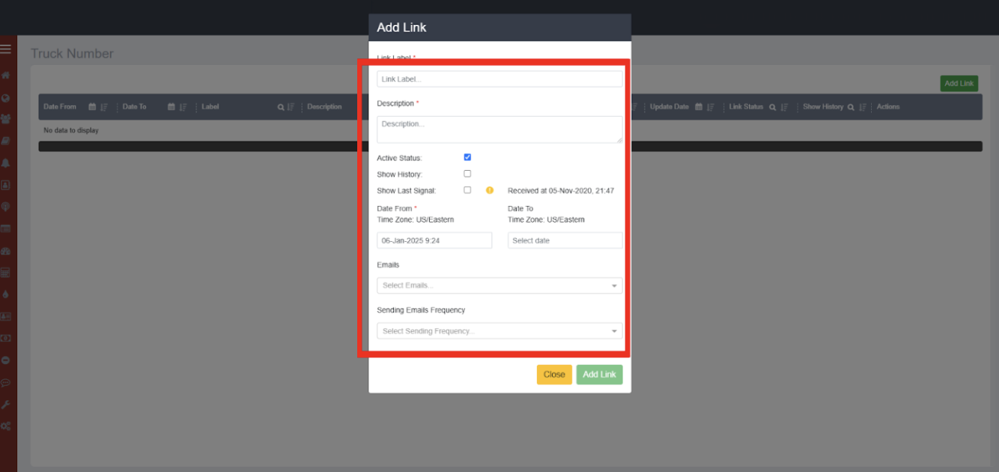
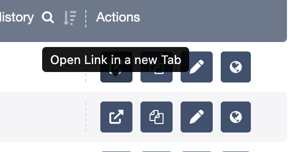
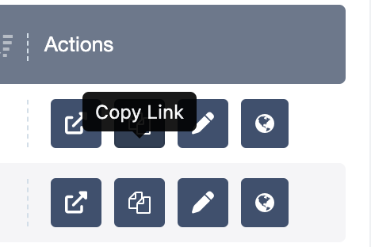
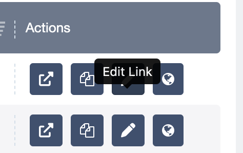
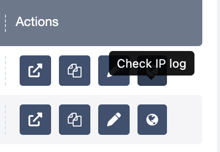
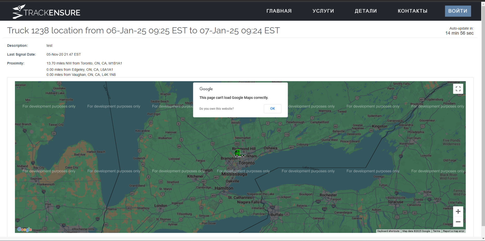
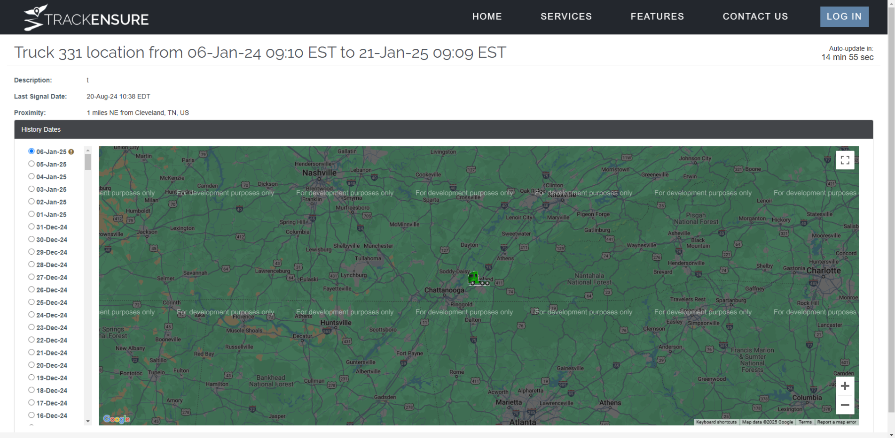

Описание
Truck Location Feature — это инструмент для отслеживания перемещений грузовиков и трейлеров в заданный временной интервал. Для мониторинга можно создать ссылку, указав временные рамки, настроить видимость истории перемещений и частоту получения уведомлений на электронную почту. Отслеживание осуществляется через вкладки "Trucks" и "Trailers", где кнопки "Truck Location" и "Trailer Location" позволяют просмотреть передвижения соответствующего транспорта.
Ссылки можно редактировать, копировать, проверять их журналы доступа (включая IP-адреса) и статус активности. После истечения временного интервала ссылки становятся неактивными, и их подробная информация недоступна. Для управления ссылками предоставлены функции сортировки, фильтрации и поиска по колонкам, включая фильтрацию по датам.
Создание трекинговой ссылки
- Нажмите кнопку "Create Link".
-
Заполните форму с обязательными полями:
- Название ссылки
- Описание
- Активный статус
- Показ истории передвижений
- Показ последнего сигнала
- Период отображения данных
- Email-адреса для уведомлений
- Укажите частоту отправки писем. 
Управление ссылками
-
<
- Открыть ссылку: откроется в новой вкладке. 
- Скопировать ссылку: ссылка будет скопирована в буфер обмена.
- Редактирование: доступно при наличии соответствующих прав. 
- Просмотр логов: показывает информацию о действиях с ссылкой.
- В случае если была выбрана функция - показывать Active status, страница отслеживания будет выглядеть следующим образом:  На странице отображается только актуальное расположение трака.
- В случае если была выбрана функция - показывать Show History, страница отслеживания будет выглядеть следующим образом: На странице будут отображаться все передвижения трака за выбранный период при нажатии на соответствующую дату
- В случае если была выбрана функция - Show last signal, при отсутствии активного сигнала трака, будет отображаться точка, в которой с трака был получен последний сигнал.
При нажатии Открыть ссылку/Скопировать ссылку вы перейдете на страницу отслеживания расположения трака.
Ограничения и уведомления
Страницу нельзя обновлять чаще, чем раз в 15 секунд, иначе появится ошибка.